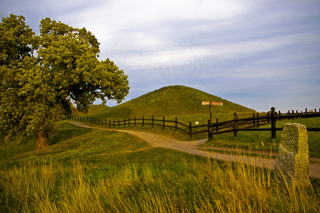

** Prices listed in black exclude VAT and prices in grey include 25% VAT.
The registration fee includes:
The workshop banquet will be held on Thursday inside Uppsala's castle. A ticket to the banquet costs an additional SEK 1050 (SEK 1313 incl 25% VAT). The price includes a three course meal (appetizer, main course, dessert), an apperitif, wine with each course, coffee, and entertainment. Tickets for conference attendees can be purchased during registration, while tickets for accompanying guests can be purchased using the guest registration form.
Request for financial support
If you are interested in receiving financial support to attend the 19th Cambridge Workshop on Cool Stars,
Stellar Systems, and the Sun, please apply using the
following form.
We anticipate providing support in
two forms: registration fee waivers and travel reimbursements. Total amounts will be based on a
combination of need and funding availability.
On-site child care will be available at a cost of SEK 1250 (incl. VAT) per child per every 4 hours. Service will be provided by Nannyakuten through their "Nanny on Location" package. As parents, you'll be able to attend the workshop knowing your child is safely under the supervision of trained Nanny's and you'll be able to visit your child at any point. Parents are expected to supply diapers, toys, food, beverages, etc. For children under 3 years, the nanny to child ratio is 1:2. Please email the CS19 organizers to express interest, or sign-up during registration. Please indicate the number of children, their age, and anticipated number of hours that you'll need child care.
There is no individual landmark that is a "must see," but there is a plethora of things to do and interesting places to visit. It all depends on what you find interesting!
We provide you with information about notable landmarks, musuems, and other attractions along
with information about how to get from place to place (bike rental locations, walking/bike paths,
bus numbers, bus stops, etc.). It will be advantageous to get a bus card (in registration).
Cost: Free (or 100 SEK with bus card) — Time: Unlimited — Limit: None.

Visit Gamla Uppsala (Old Uppsala), which is just north of present-day Uppsala. Gamla Uppsala
was a political, religious, and cultural centre from 3rd century AD onwards. It is home to ancient
burial mounds, last resting place of the three gods Thor, Odin, and Freyr according to ancient mythology.
Old fashioned mead is vailable from the local café. Enthusiasts can visit the
Gamla Uppsala Museum (80 SEK) exhibiting
archeological findings, or discover the life in 1800's Sweden in the open-air museum
Disagården
Cost: Free (or 100 SEK with bus card) — Time: Unlimited — Limit: None.
Sigtuna lies just South of Uppsala on Lake
Mälaren and was Sweden's first town. It is a quintessential Swedish town with charming
wooden buildings, rune stones, castles, and historic stone churches. This excursion
includes bus transportation to Sigtuna, the opportunity to go on a guided walking
tour, and freedom to explore Sigtuna on your own.
Cost: 200 SEK — Time: 5 hours — Limit: 100 participants.
Stockholm is the capital of Sweden and the self-proclaimed capital of
Scandinavia. It's a modern vibrant city surrounded by water. The city is spread across 14 islands with the Stockholm
archipelago and the Baltic Sea just to the East. There are a large number of sights to see and places
to visit in Stockholm; we can't select just a single one. Instead, this excursion provides you with a train
ticket to and from Stockholm and access to local public transportation so that you
can go where you'd like without
having to worry about how you're going to get there! Maps with attractions and suggestions of what to do will also
be provided.
Cost: 200 SEK — Time: Unlimited — Limit: None.
Take a tour of Uppsala's largest brewery, Slottskällans Bryggeri.
During the three hour
long tour you'll learn about the brewery's history, the brewing process, and different
beer styles. At the end, samples of "green" beer direct from the fermentation tanks will be
available. Oh, and you'll get to enjoy the selection
of beers that Slottskällans has to offer!
Light snacks will be provided.
Cost: 450 SEK — Time: 3 hours — Limit: 35 participants.
Follow Carl von Linné on a tour of his home and the garden that now
bears his name. The Linné Garden was
originally founded in 1655 as the first botanical garden in Sweden. Carl von Linné assumed responsibility
for the garden in 1741 and arranged the garden according to his own system. The garden remains very much the same
as it was when Linné arranged it. Within the botanical garden stands Linné's former home of 35 years, which
has since been converted into a museum.
Cost: 220 SEK — Time: 1 hour — Limit: 28 participants.
Go on a unique guided tour of Uppsala's castle.
Cost: 150 SEK — Time: 1 hour — Limit: 50 participants.
Do like these people in the picture, except in color and with modern clothing, and
enjoy a guided walking tour of Uppsala. An experienced guide will show you around some of
Uppsala's most prominent landmarks including Uppsala's cathedral, Uppsala University's main
building, Carolina Rediviva (the University library: home to the silver bible and first editions
of many important astronomical texts), and the botanical garden. Cost includes admission to
the individual attractions.
Cost: 150 SEK — Time: 2 hours — Limit: 50 participants.
Registration and payment for Cool Stars 19 will be handled by an independent contractor, Akademikonferens. For technical problems, questions about payment procedures, and other concerns, please contact Akademikonferens directly. General registration questions may be directed to the Cool Stars 19 local organizing committee, cs19@physics.uu.se.